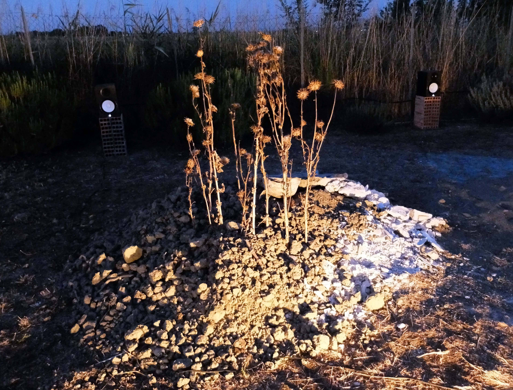
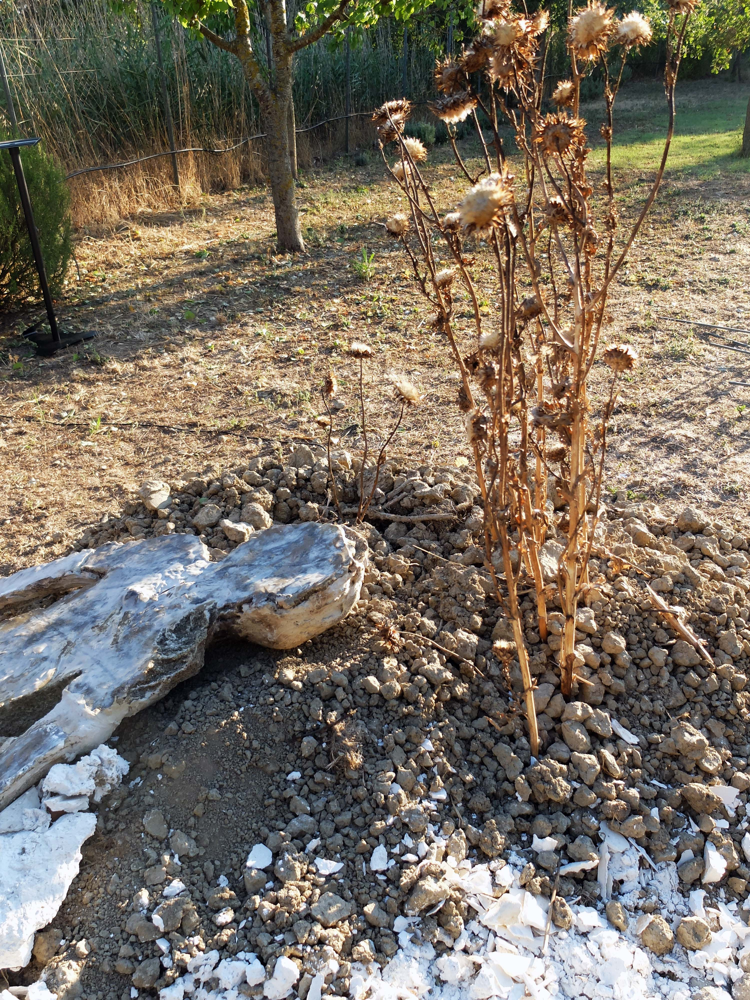
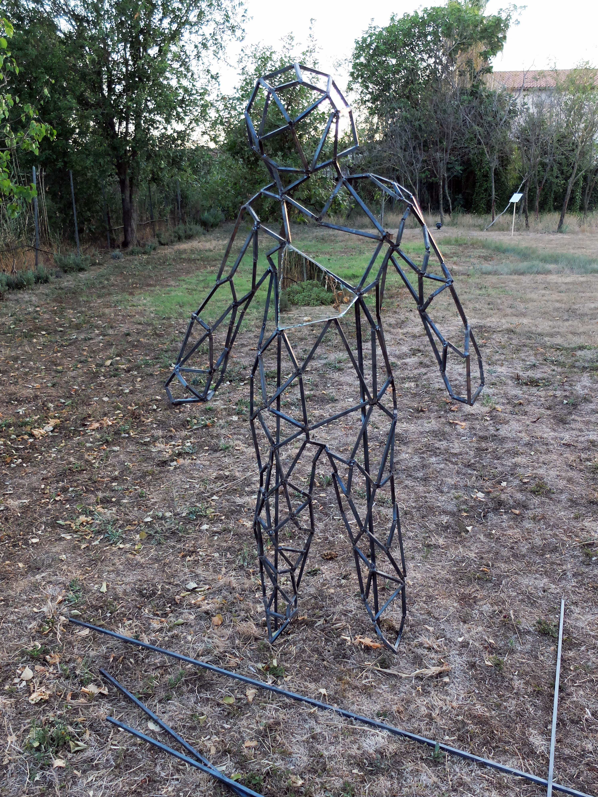
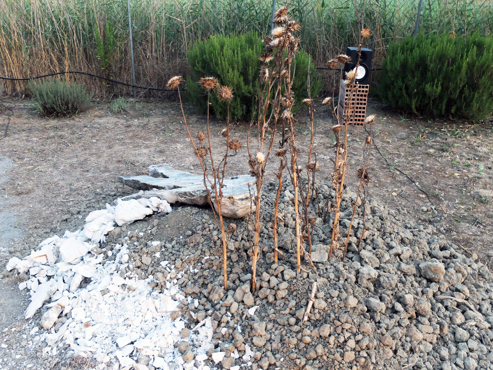
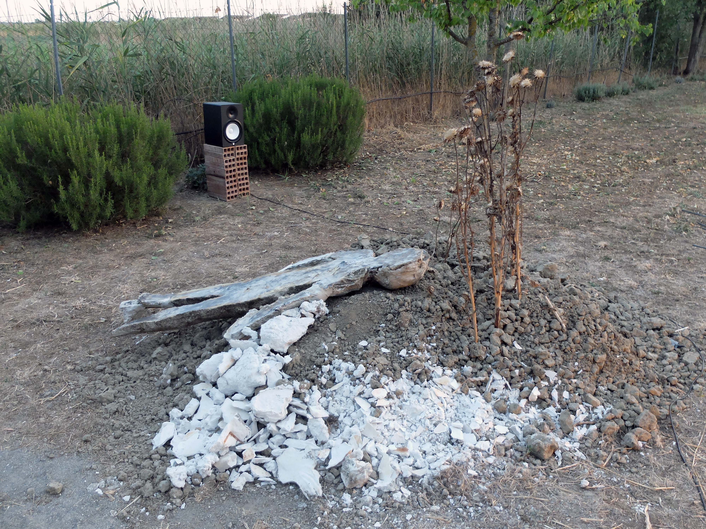
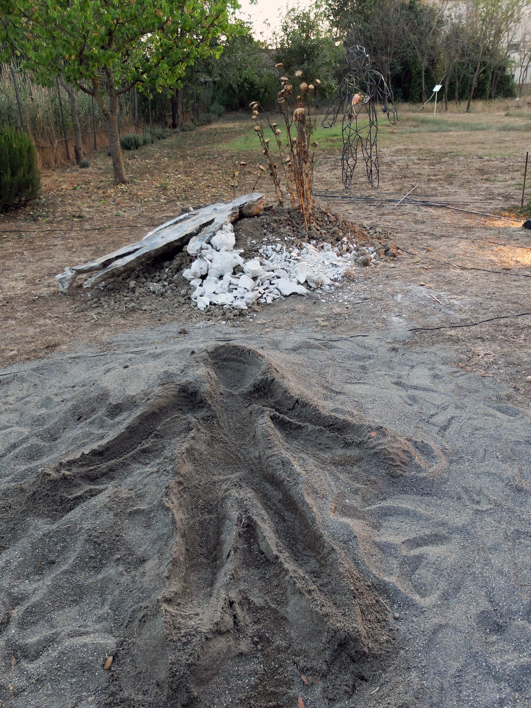
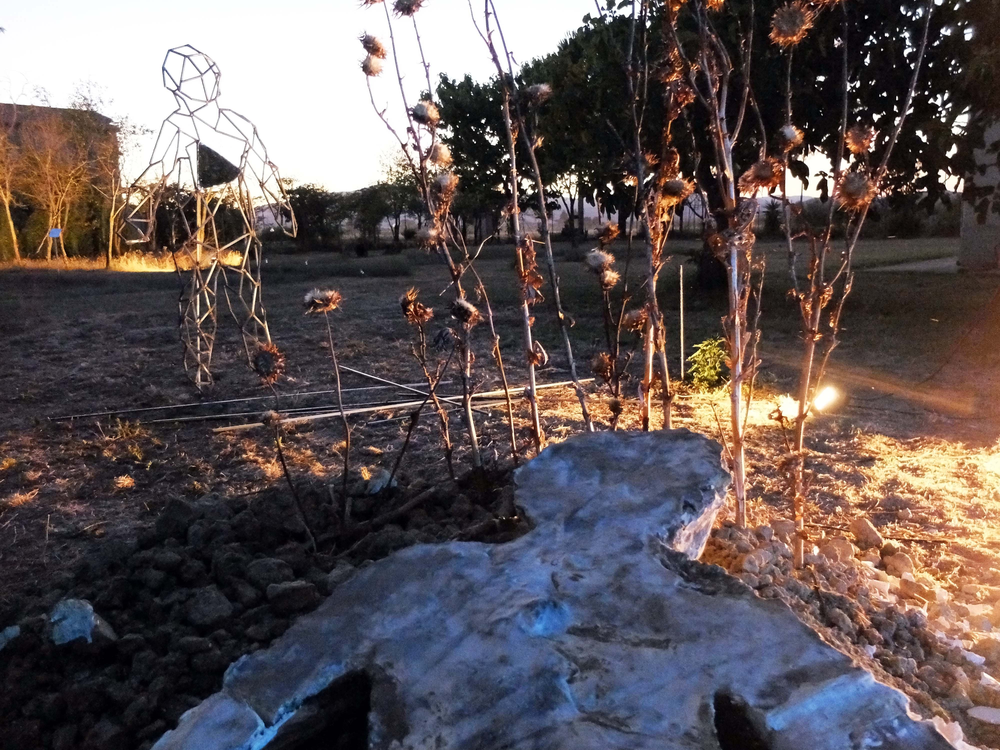
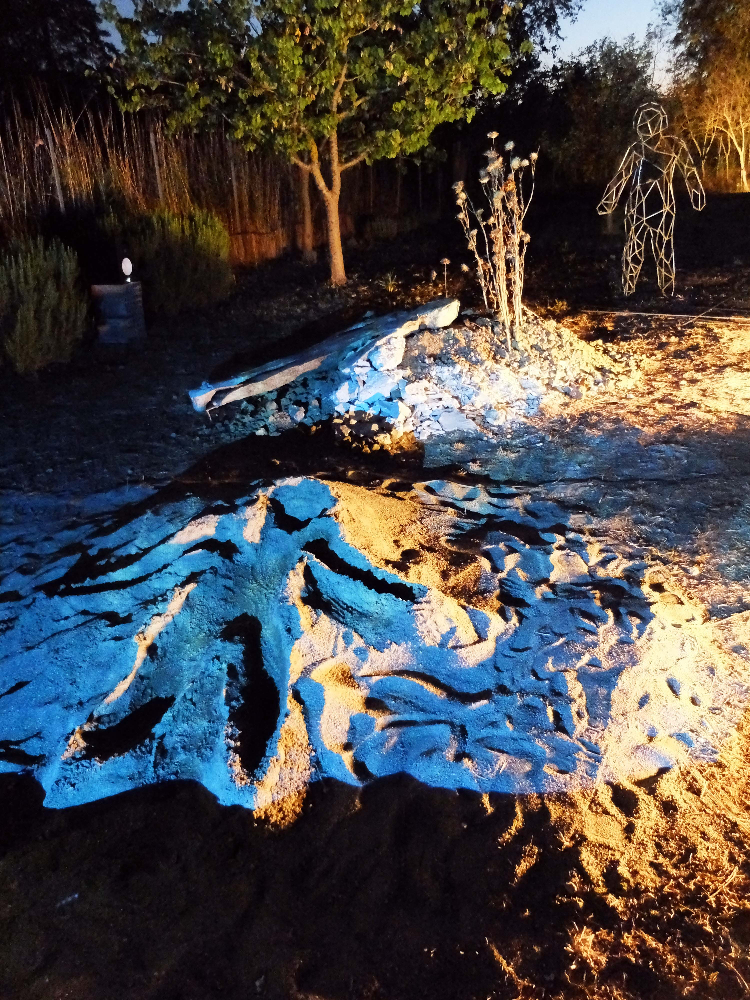

TRACES est une installation audioviuelle et interactive réalisée à Grosseto du 10 au 15/7/2017.
Y-a-t-il une continuité entre les traces, celles laissées dans le paysage et celles qu'il laisse en nous?
L'empreinte est cet écart millimétrique entre le sol et ce qui était une partie de mon corps, une inconsistance temporelle, quelque chose là et en même temps déjà parti, qui porte en lui-même le futur, son effacement et une existence counter reliefen temporaire, une présence-absence gravée dans la matérialité de la nature.
This nature is passage, process, composed by a an ensemble of events which are overlaying each other.
L’être humain n’est pas un observer en face d’elle mais il est une partie du passage de la nature, à travers son corps qui est un événement percevant, il adhère aux événement de la nature.
La trace est le point d’intersection, la ligne de démarcation visible de cette fusion, à la fois physique et symbolique entre l’homme et la nature.
Si l’empreinte de l’humanité sur son environnement est souvent visible et critiquée, comment peut-on au contraire interagir, la marquer positivement, et sentir celle qu’elle laisse en nous?
La trace n’est pas un processus unilatéral, mais fonctionne au moins par deux, il y a une réciprocité entre l’humain et la nature. Je suis à travers mon corps partie de la nature et la nature entre en relation avec moi, comme le double mouvement des battements d’un même coeur.
Cette installation audiovisuelle et interactive offre une interprétation de cette conception de la nature comme un processus, montrant cette dualité unifiée, ses congruences et interactions et les met directement à l’épreuve.
Images:







